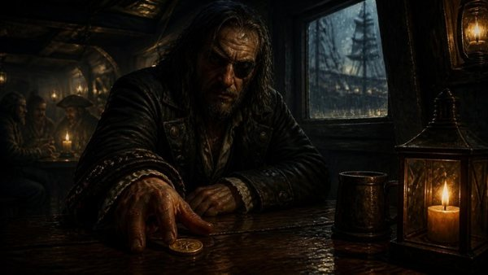
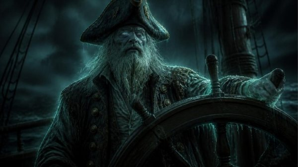

Um escape room de comunicação. Três tripulações acordam presas em partes diferentes de um navio e não se veem. Para fugirem antes da meia-noite, têm de descrever, escutar e confirmar.
Escape room de comunicação
À meia-noite, o Corvo Negro vai ao fundo.
Quem ainda estiver a bordo fica a servir o Capitão Tormenta. A única saída é o bote salva-vidas, e o cadeado só abre com o que as três tripulações descobrirem juntas.
Há trezentos anos, o Capitão Tormenta fez um pacto com o mar: o Corvo Negro nunca iria ao fundo, desde que todos os anos levasse uma tripulação nova. Ontem à noite, numa taberna do cais, um velho marinheiro pagou um copo ao grupo e deixou uma moeda de ouro em cima da mesa. Quem aceita a moeda aceita o contrato.

A taberna do cais

O Capitão Tormenta
O jogo abre com um vídeo narrado, projetado com som. A partir daí, o relógio conta até à meia-noite, a água vai subindo e o navio manda surpresas: um nevoeiro que abre e dá um minuto, uma onda que põe toda a gente de pé, o sino que obriga a sala a calar-se.
Como se joga
Cada tripulação recebe uma folha com a imagem da sua parte do navio (a cabine do capitão, o porão ou a cozinha), o diário do capitão e as regras.
As pistas do diário falam do que está nas imagens das outras tripulações. Ninguém pode mostrar a sua folha. Só se pode falar, descrever e perguntar.
Três algarismos certos abrem a porta. Com ela aberta, a tripulação procura a moeda escondida na sua própria imagem.
As três moedas soltam o bote. Se o sino tocar as doze badaladas antes disso, o navio vai ao fundo com toda a gente.
Com traidor, uma pessoa por grupo recebe um cartão secreto e joga para o capitão. Antes de saírem do navio, a sala aponta para quem acha que foi.
O que se trabalha
Comunicação, à força. Uma descrição vaga custa minutos, e há pistas parecidas que obrigam a confirmar que se está a falar da mesma coisa. Algumas passam pelas três mesas, por isso a informação tem de atravessar o navio sem se perder pelo caminho.
O debriefing parte do que aconteceu no jogo: que descrições ajudaram e quais confundiram, como o grupo se organizou para falar entre mesas, o que fez quando um código falhou (procurou o erro ou um culpado?) e o que leva dali para o trabalho de todos os dias.
Perguntas frequentes
Para que grupos serve?
Para equipas de trabalho e turmas de formação, de 6 a 24 pessoas por grupo. Com mais gente, jogam até quatro grupos ao mesmo tempo, a competir entre si.
Quanto tempo leva?
45 minutos de jogo e 15 a 20 de debriefing. O tempo de jogo pode encurtar ou alargar, conforme a sessão.
O que é preciso na sala?
Um projetor com som e uma mesa para cada tripulação. As folhas das tripulações e os cartões secretos são impressos para cada sessão.
É preciso internet?
Não. O jogo corre no computador ligado ao projetor, sem rede.
Posso usar o jogo nas minhas sessões?
Não está disponível para descarregar nem para outros formadores: sou eu que o conduzo. Para o levar à tua equipa ou turma, fala comigo.